Computing homographies by hand, rectifying photos, and stitching overlapping shots into panoramas
If you take two photos from the same spot and only turn the camera, the two images are related by a homography, which is a 3×3 projective transform. In this project I computed homographies from clicked point pairs, and wrote my own inverse warping with nearest neighbor and bilinear sampling. Rectification takes a sign photographed at an angle and makes it look like I shot it head-on. Mosaicing warps neighboring photos into one view and blends them into a single wider image.
For each mosaic I stood in one place and rotated the camera between shots, keeping roughly half of each frame overlapping with the next. The mountain and beach sets are photos I shot, but for the third set I used three photos of a blossom branch from an open source project called OpenPano (https://github.com/ppwwyyxx/OpenPano). All images were downscaled to at most 1200 px on the long side.
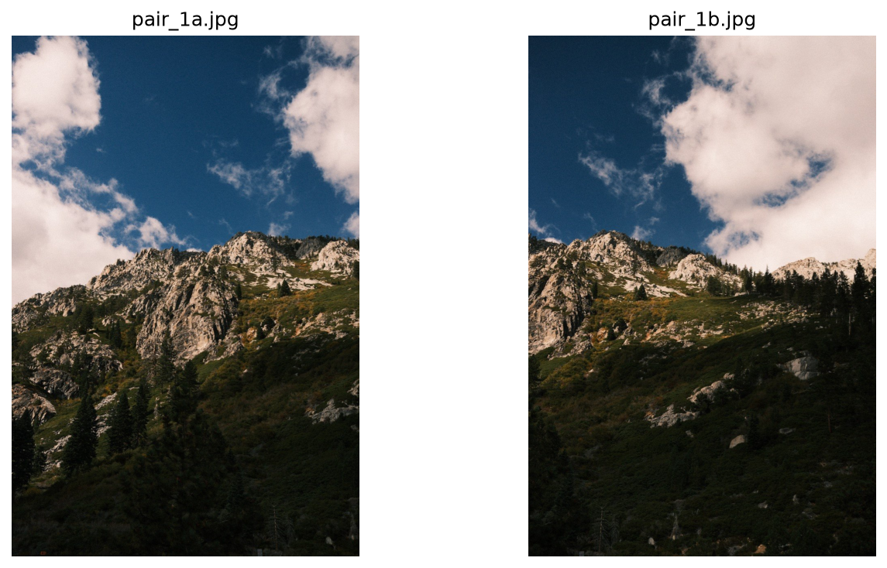
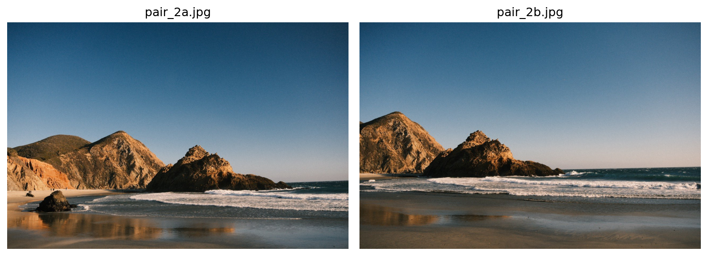
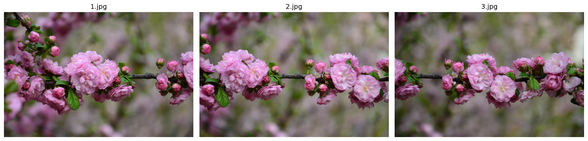
For rectification I used two photos of flat rectangles shot at an angle: a bronze 67 WALL plaque in Manhattan, and a Popup Bagels poster in a shop window.
A homography maps a point (x, y) in one image to (x', y') in another:
That leaves 8 unknowns. Writing out x' and y' and multiplying through by the denominator turns each correspondence into two equations that are linear in the entries of H:
Four points give exactly 8 equations, but a few pixels of clicking error then throws H way off, so I clicked 10 pairs per image pair and solved the 20×8 system with least squares. Before solving I shift and scale each point set so it's centered at the origin with an average distance of √2 from it, then undo that afterwards. Without this, the columns of A range from 1 to about 106 (the x x' terms), which makes the system badly conditioned.
def computeH(im1_pts, im2_pts, normalize=True):
# H maps im1 -> im2
p1, p2 = np.asarray(im1_pts, float), np.asarray(im2_pts, float)
T1 = _normalizer(p1) if normalize else np.eye(3)
T2 = _normalizer(p2) if normalize else np.eye(3)
A, b = build_system(apply_H(T1, p1), apply_H(T2, p2)) # 2n x 8, 2n
h, *_ = np.linalg.lstsq(A, b, rcond=None)
H = np.linalg.inv(T2) @ np.append(h, 1).reshape(3, 3) @ T1
return H / H[2, 2]I clicked the points with matplotlib's ginput, alternating between the two images, and
picked sharp things that don't move. These include rock corners and cracks for the landscapes, branch knots and bud
tips for the flowers. I avoided referencing clouds and waves since those changed between shots.
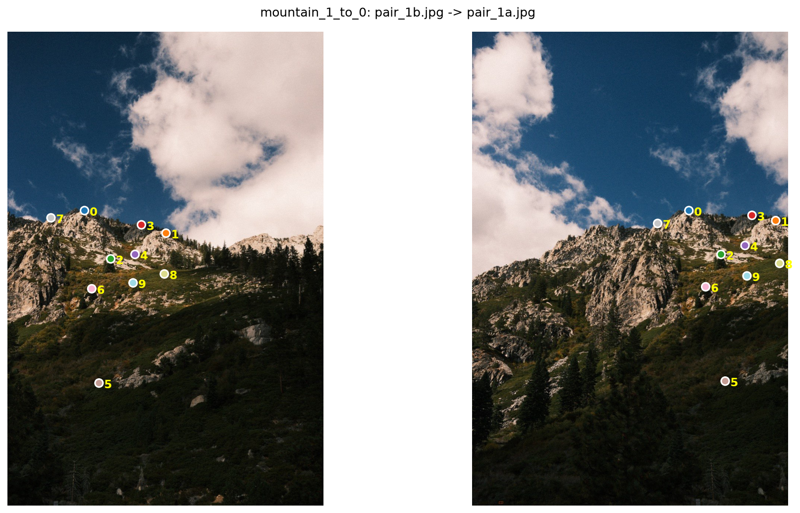
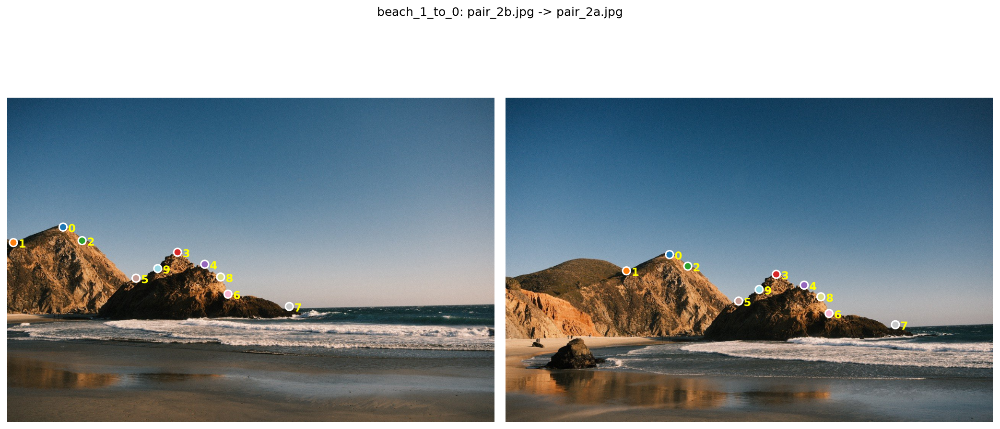
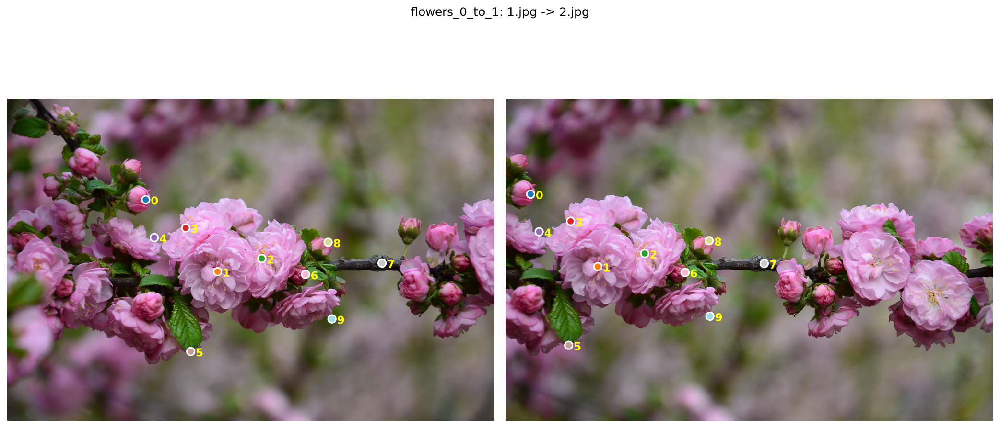
Flowers, left image → middle.
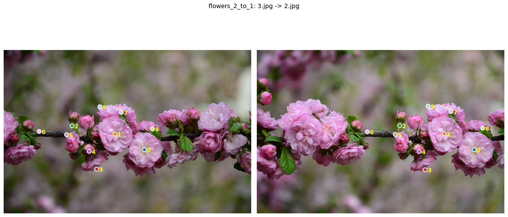
Flowers, right image → middle.
The first four rows of [A | b], two per point:
[ 194.56 452.51 1 0 0 0 -106598.55 -247931.90 | 547.91 ]
[ 0 0 0 194.56 452.51 1 -88037.85 -204762.56 | 452.51 ]
[ 400.92 509.75 1 0 0 0 -307780.38 -391332.59 | 767.69 ]
[ 0 0 0 400.92 509.75 1 -191616.87 -243634.52 | 477.95 ]The recovered homography:
H = [[ 0.8347 0.1015 314.7038]
[ -0.2422 0.9301 57.4185]
[ -0.0002 -0.0000 1.0000]]The bottom row is close to [0, 0, 1], which is what you'd expect for a small camera rotation. The top-left 2×2 block is close to a rotation plus a bit of scaling, and the last column is the shift between the two frames.
To check the clicks, I mapped each point through H and measured how far it landed from its partner:
| Pair | Points | Mean error (px) | Max error (px) |
|---|---|---|---|
| mountain 1 → 0 | 10 | 2.31 | 7.25 |
| beach 1 → 0 | 10 | 1.37 | 2.35 |
| flowers 0 → 1 | 10 | 2.88 | 5.09 |
| flowers 2 → 1 | 10 | 2.17 | 4.88 |
The beach pair was the cleanest, with every point within about 2 px. The mountain pair has one point that's off by 7 px, showing that I probably misclicked due to the grain in the photo (from my camera recipe) distorting what I saw as granite points. Luckily, the other nine hold it in place, and the ridge still lines up in the mosaic. The flowers have the highest average error. That's likely because the petals are soft and blurry at the edges, and the branch may have moved a little in the wind between shots.
I used inverse warping. First I push the four corners of the input through H to get the bounding box of the output. Then, for every pixel in that box, I apply H−1 to find where it came from in the source image and sample there. Going backwards means every output pixel gets a value, so there are no holes. Pixels that map outside the source get alpha = 0.
The sample location is almost never a whole pixel, so I implemented two ways to read it:
where a and b are the fractional parts of x and y. Both are fully vectorized in numpy, with no loops over pixels.
def warpImageBilinear(im, H, bbox=None):
h, w = im.shape[:2]
bbox = warped_bbox(H, im.shape) if bbox is None else bbox
sx, sy = _inverse_coords(H, bbox) # source coords for every output pixel
valid = (sx >= 0) & (sx <= w - 1) & (sy >= 0) & (sy <= h - 1)
x0 = np.clip(np.floor(sx).astype(int), 0, w - 2)
y0 = np.clip(np.floor(sy).astype(int), 0, h - 2)
ax, ay = (sx - x0)[..., None], (sy - y0)[..., None]
top = (1 - ax) * im[y0, x0] + ax * im[y0, x0 + 1]
bot = (1 - ax) * im[y0 + 1, x0] + ax * im[y0 + 1, x0 + 1]
out = (1 - ay) * top + ay * bot
out[~valid] = 0
return out, valid.astype(float), bboxThis was a good test before doing mosaics, since there's only one image. I clicked the four corners of the sign and mapped them to a rectangle I defined myself, with the same aspect ratio as the real object (800×220 for the plaque, 500×600 for the poster).
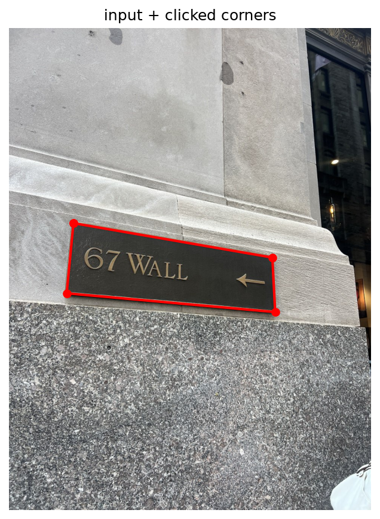
Input with the 4 clicked corners.
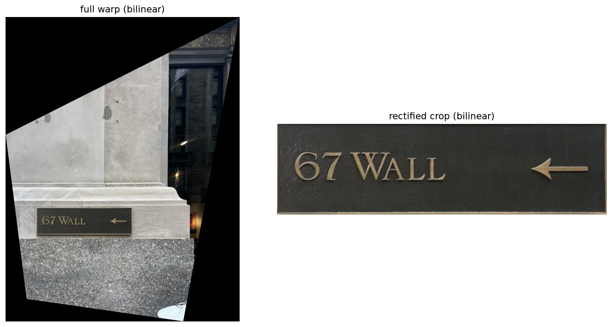
The text and the arrow come out level, and the border of the plaque is a proper rectangle. In the full warp, the stone edges around the plaque straighten too, since they lie in the same plane as it.
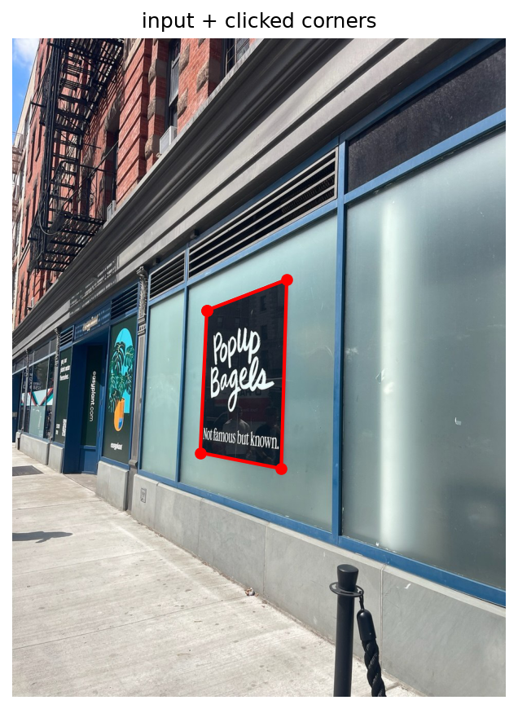
Input with the 4 clicked corners.
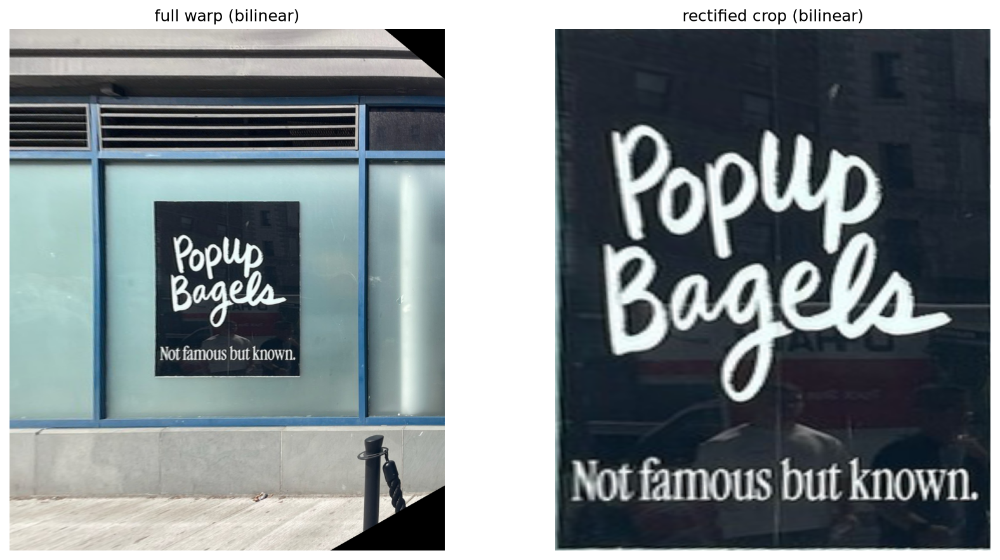
This one is a much steeper angle, and my first try at warping the whole photo never finished. The far end of the storefront is close to the vanishing line, so when the poster is made flat those pixels get stretched toward infinity and the output would have been about 25,500 × 25,500 pixels. In my second try, I capped the output size, so the left image only shows a window around the poster. The window frames and vents around it come out straight, which is a good sign that H is right.
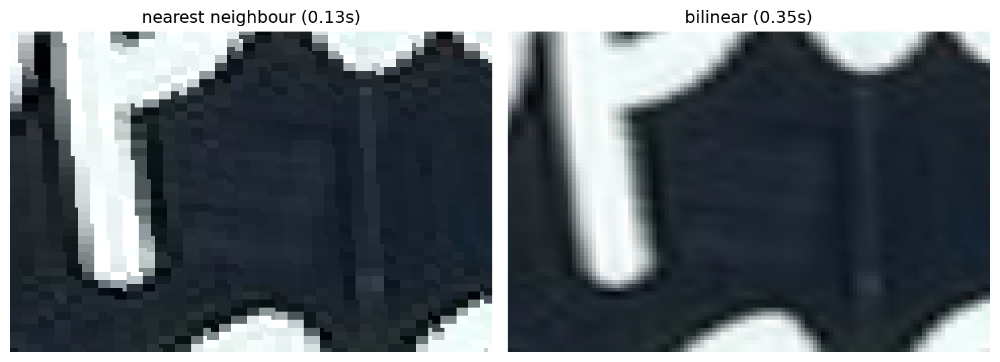
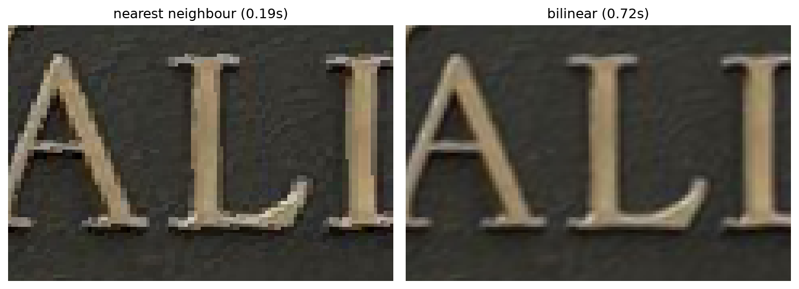
| Image | Nearest neighbor | Bilinear |
|---|---|---|
| 67 WALL (whole photo) | 0.19 s | 0.72 s |
| Popup Bagels (window around poster) | 0.13 s | 0.35 s |
Nearest neighbor was about 3–4× faster on the plaque and close to 3× on the poster, because it reads one pixel instead of four and does no arithmetic. But zoomed in, its edges are jagged staircases, and since the poster gets enlarged a lot, each source pixel turns into a visible block. Bilinear gives smooth edges, at the cost of being slightly soft. I like the results better on bilinear, and it's worth the extra time. Hence, I used it for all the mosaics.
My procedure:
Pasting one image over the other would leave a hard seam, since the two shots don't have exactly the same exposure. Feathering fixes most of that, with each output pixel being the weighted average of all the images that cover it, so the switch from one image to the next happens gradually across the overlap. The problem is anything that doesn't line up perfectly gets averaged into a faint double, or ghost.
So I also did a two-band (2-level Laplacian pyramid) blend. Each warped image is split into a low band (Gaussian blur, σ = 5) and a high band (the image minus its blur). The low bands get feathered so the color and brightness change smoothly. For the high band, each pixel takes the detail from just one image, whichever has the largest weight there, so fine texture never gets doubled.
def blend_two_band(warped, weights, sigma=5):
W = np.stack(weights)
lows, highs = [], []
for im, w in zip(warped, weights):
m = (w > 0).astype(float)
low = _masked_blur(im, m, sigma)
lows.append(low * m[..., None])
highs.append((im - low) * m[..., None])
low_out = (W[..., None] * np.stack(lows)).sum(0) / np.maximum(W.sum(0), 1e-8)[..., None]
winner = np.argmax(W, axis=0)
high_out = np.zeros_like(low_out)
for i in range(len(warped)):
high_out[winner == i] = highs[i][winner == i]
return np.clip(low_out + high_out, 0, 1)One thing to note is that a plain Gaussian blur pulls the black area outside each image into the low band, which leaves dark halos along the edges. I blurred the image times its mask and divide by the blurred mask, so only real pixels are averaged.
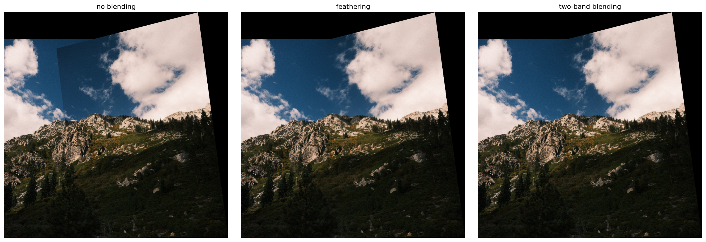
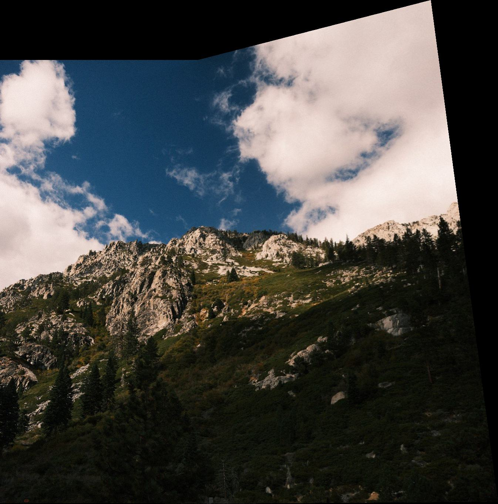
With no blending you can see exactly where the second image starts, as a darker rectangle in the sky. Both blends remove it. The ridge lines up well, which makes sense since the mountain is far away and small hand movements don't cause parallax. The clouds did move between shots, so no blend can make them match exactly. Feathering averages the two versions, which softens the cloud edges in the overlap. Two-band keeps the edges sharp because it takes the detail from only one image.
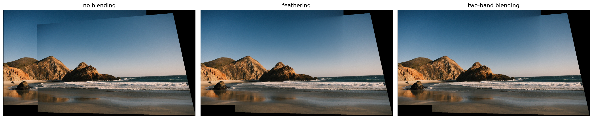
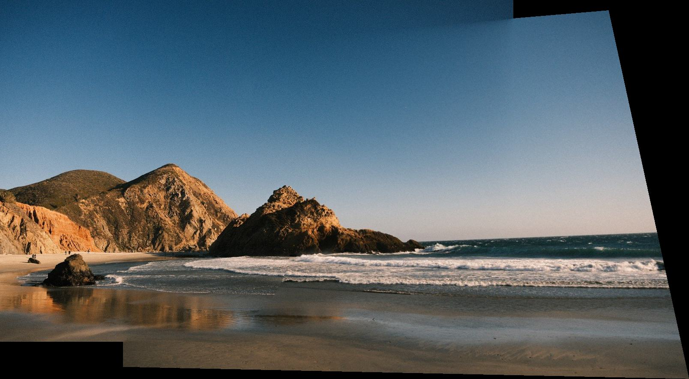
I wasn't sure this pair would work at first, since the rock looks bigger in the second shot so I thought I'd walked closer, which would break the homography. It aligned fine in the end, so it was probably just a small zoom difference, which a homography handles. The two shots have quite different color, and the seam is very obvious without blending. Blending smooths it into a gradual shift across the sky. The waves moved between shots, so the foam in the overlap doesn't fully match, but it's hard to notice in water.
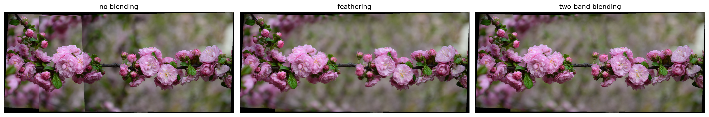
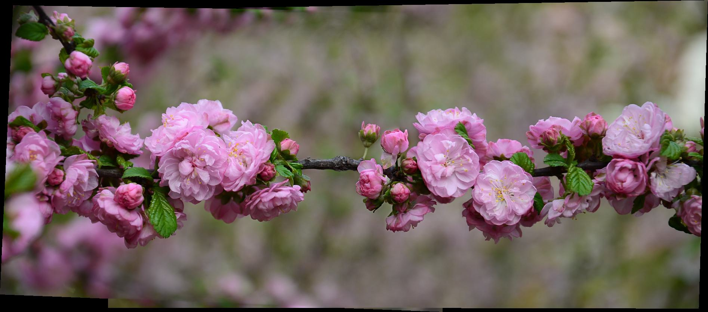
This was the easiest of the three. Almost everything in focus lies along one branch, which is close to a flat plane, so the homographies fit well. The blurred background has no detail, so seams there disappear completely once blended. The two images on the sides were each warped directly into the middle one.
The thing that surprised me most was how forgiving least squares is with enough points. One of my mountain clicks was off by 7 px, but the other nine kept H in place and the ridge still lined up. Spreading the clicks across the whole overlap mattered more than getting every single one perfect. Furthermore, the bagel poster showed me a real limit of homographies. You can't make one plane look flat without stretching everything near its vanishing line toward infinity. My first attempt tried to warp the whole photo and would have produced an image about 25,500 pixels wide.